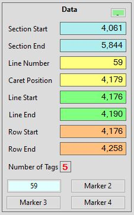
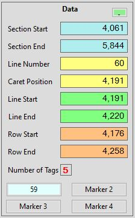
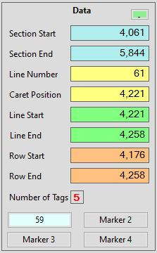

AECHO V2 Help - Data Panel Area
<Return to Help's Home Page>
The Data
Panel Area displays position information for
the current ODF and any selection. There are eight primary position
fields, which are also hyperlinks to their locations: clicking on
one of these colored fields will move the cursor to that location,
without selecting a Row nor changing the Section - similar to a
single mouse-click on the position displayed in the field. If a
Record-Row is currently selected, this area displays the number of
Fields/Tags found in that Record. Lastly, the four Marker
buttons are located in this area, allowing bookmarks to be set and
used.
- Section
Start & End
- Identifies the character
positions of the start and the end of the current Section. Start
is defined as the first character of the first Line of the
Section, the "<"
bracket that opens the Section's Start-Tag. End is defined as
immediately following the closing ">" bracket of the Section's
End-Tag. Clicking on Section Start positions the
Cursor/Caret at the beginning of the Line containing the
Section's Title i.e., its Start-Tag. Clicking on Section
End positions to the end of the Line
with the Section's End-Tag.
- Line
Number
- The number of the Line where the Cursor/Caret is currently
positioned. This value is one-based i.e., the first line in the
ODF is Line
Number 1. As Lines are never soft-wrapped in the
ODF
Display Area, the numbers
displayed by AECHO will generally correspond with those assigned
by many common text editors, such as Notepad++. Clicking this
field will position to the beginning of the Line.
- Caret
Position
- The character position of the Cursor/Caret's present location.
This value is zero-based i.e., when placed in front of the first
character of the ODF, its value will be 0. The invisible
line-break character at the end of each line is included in the
count. Character positions are always based on the simple-text:
they do not include any hidden Rich-Text formatting. Similar to
Line
Number, this field will closely
correspond to the positions reported back by common text
editors. Clicking on this field will restore the visibility of
the Cursor, without moving it: the Cursor/Caret is usually
hidden when the ODF Display Area loses focus,
so this lets the user restore it without risking moving the
position.
- Line
Start & End
- The character positions of the start and the end of the
current Line. Clicking on one of these fields will position to
the start or end of the Line.
- Row
Start & End
- The character positions of the start and the end of the
current Row. Record-Rows may be comprised of more than one Line.
All other Row types are found on a single Line, in which case
the values displayed here will match those of their respective Line
Start & Line End
counterparts. Clicking on one of these fields will position the
Cursor/Caret to either the beginning of the first Line of the
Row, or to the end of the last Line of the Row.
- Number
of Tags
- When a Record-Row is selected, and the Tags Panel
Area is filled in, this field displays the
number of Fields/Tags found in the Record and displayed in the Tags
Panel Area. The outer-bounding
'<o>...</o>' Tags that delimit the Record are not in
the count, only the Child Elements of the Record are counted.
This field is not clickable.
- Marker
Buttons
- The four Marker buttons are found in
this area. They allow the user to set up to four bookmarks,
which are pointers to the starting positions of bookmarked
Lines. These buttons, once set, can be used to reposition the ODF Display
Area and the Cursor/Caret position to the
selected bookmark. See Using Markers for a complete
description of their use.
- Led
Indicator
- The small colored box found at the upper-right corner of this
area provides a simple report on the status of scanning &
listing the Sections, which can take some time for a very large
ODF. This control is colored orange when there is no ODF loaded;
green when an ODF is loaded but AECHO is not scanning; red when
a scan is in progress. It is not a clickable control.
Example: In the following example, a single Record-Row, three
Lines long, was selected. In each case, the only difference is
that the Cursor/Caret is successively positioned to the first
character of the first of the three Lines, then the second, and
lastly the third. Notice how the data changes: in the first
example, the Line Start is the same as the Row Start,
and the Caret is located there; in the second, the Line
Number is advanced by one, the Line Start/End
is wholly between the outer Row boundaries, and the Caret is
located at that Line's beginning; lastly, the Line End
is the same as the Row End, the Line
Number is one greater again, and the Caret
is located at the beginning of that Line.

|
|

|
|

|
Data Panel: a Row, Line 1 of 3
|
|
Data Panel: a Row, Line 2 of 3
|
|
Data Panel: a Row, Line 2 of 3
|